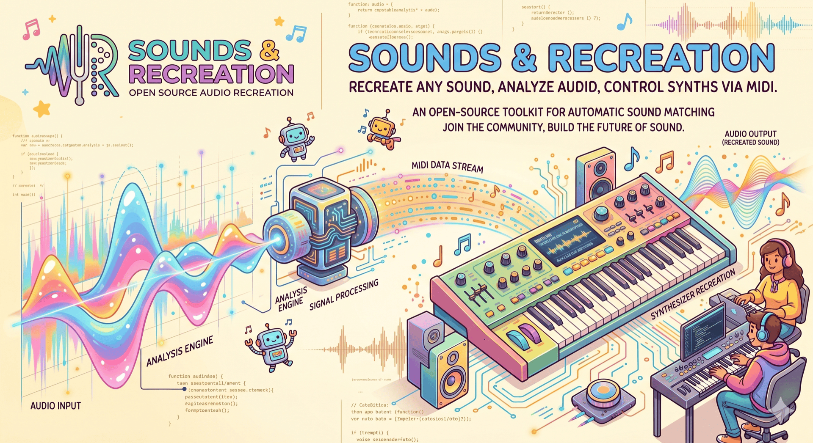

An open-source AI agent that listens to a song, reverse-engineers its keyboard sound, and dials it into your hardware synths over MIDI — built from composable MCP servers you can run, fork, and extend.

An AI agent orchestrates audio analysis and MIDI control to match a target sound on real hardware.
Import a track and isolate the keyboard part.
Stem-separate, transcribe, and profile the tone.
The agent picks a synth and matching patch.
It sets the synth's parameters over MIDI.
Render, A/B against the target, refine.
Each piece is independent and useful on its own — an MCP server, an analysis toolkit, or the agent that ties them together.
MCP server that drives MIDI keyboards — Nord Electro 5D, Roland JUNO-X, Prophet-6 — plus a mock-device runner.
Learn more → PythonStem separation, spectrum analysis, transcription, note isolation and comparison — exposed as MCP tools.
Learn more → TypeScriptThe AI agent (Vercel AI SDK) that orchestrates the MCP servers to recreate a target sound end to end.
Learn more → ResearchDesign notes for the ML analysis pipeline — amplitude/ADSR, modulation, and tone-generation experts.
Learn more → ToolingWill bundle the runtime pieces into a single macOS app — a planned one-click bring-up of the whole stack.
Learn more → Open sourceEverything is GPL-3.0. Star a repo, file an issue, or open a PR — contributions welcome.
Browse on GitHub →